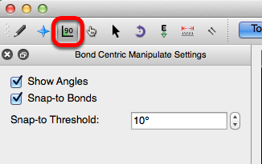

Bond-Centric Manipulate Tool#
The Bond-Centric Manipulate tool alters angles, bonds, and torsions of a molecule.

Starting with the basics:#
To begin using the bond centric manipulate tool, click on a bond within your molecule.
Clicking on a bond and dragging your cursor allows you to adjust the plane.
If the “Show Angles” box is checked, the angles from the selected bond to all adjacent bonds are displayed.

If the “Snap-to Bonds” box is checked you’ll notice that the plane changes from yellow to blue as it’s rotated. A yellow plane indicates that an adjacent bond is in line with the plane. If the plane depicted is blue, the plane is not in line with any adjacent bonds.
“Snap-to Threshold” determines how many degrees away a plane has to be to snap to an adjacent bond plane.
For example, the “Snap-to Threshold” shown below is 10 degrees. Therefore if the plane being rotated comes within 10 degrees of an adjacent bond, it will snap to the adjacent bond’s plane.
Changing the Snap-to Threshold to 90 degrees is a quick trick for the rotating plane to only snap to adjacent bond planes.

Adjusting Bonds and Torsion Angles#
Once a plane is selected the atoms on either end of the plane can be manipulated, by left clicking on the atom and dragging. The displayed angles will automatically adjust, and the selected bond will not change in length.

Left clicking on a substituent, or in this case a hydrogen bonded to one of the selected carbon atoms will allow you to adjust the torsion angle.